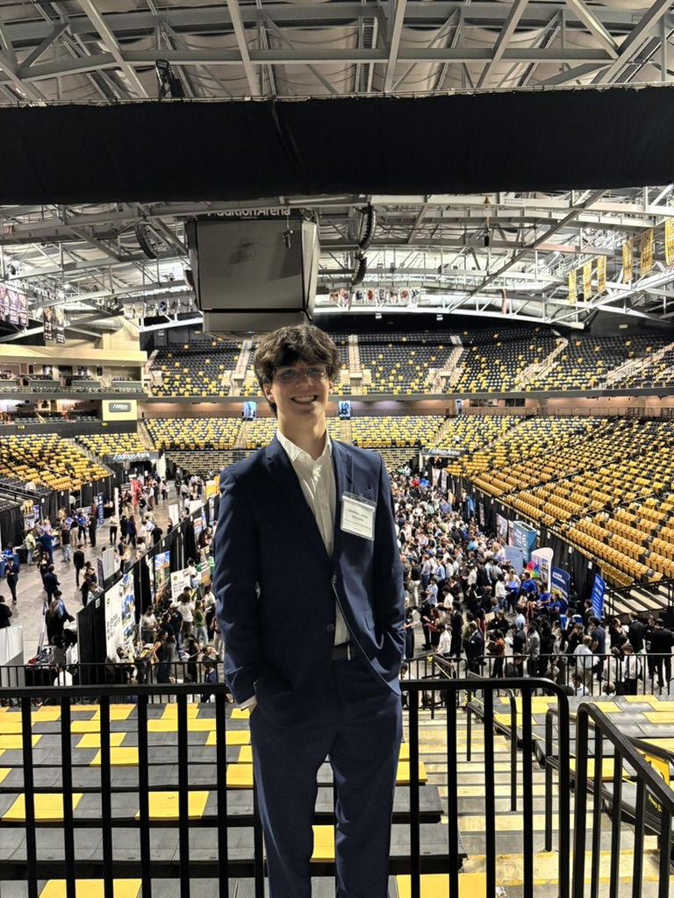

Studying Aerospace Engineering and Art History at the University of Central Florida Burnett Honors College
Second year undergraduate student interested in propulsion systems research and astronautical engineering; seeking opportunities to apply technical and collaborative skills in aerospace internships and research.
This is my personal website hosting my various projects. Read below for information concerning the technical aspects of the site. Please feel free to contact me using the Contact tab .
The site is hosted personally on a Raspberry Pi 3 running a headless Linux environment via the service nginx , and tunneled securely through Cloudflare to matthewjgonzalez.me. The Pi is accessed remotely through a separate Cloudflare tunnel and ssh (Secure Shell) on any device with a terminal. Projects are managed through a flat projects.json file, thus adding a project means adding one JSON entry and one HTML file. The site itself is updated remotely using a GitHub webhook, whose repository can be found on my GitHub page, along with all site files. The website was visually desgined using Bootstrap Studio with the assistance of Claude AI.
Please feel free to contact me if you have any questions regarding the design process or web hosting and I will be glad to assist any way I can.